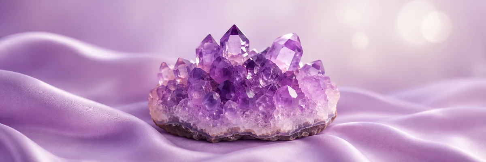
Amethyst
ATraditionally associated with calm, intuition, spiritual awareness, and reflective energy.
CalmView bracelet
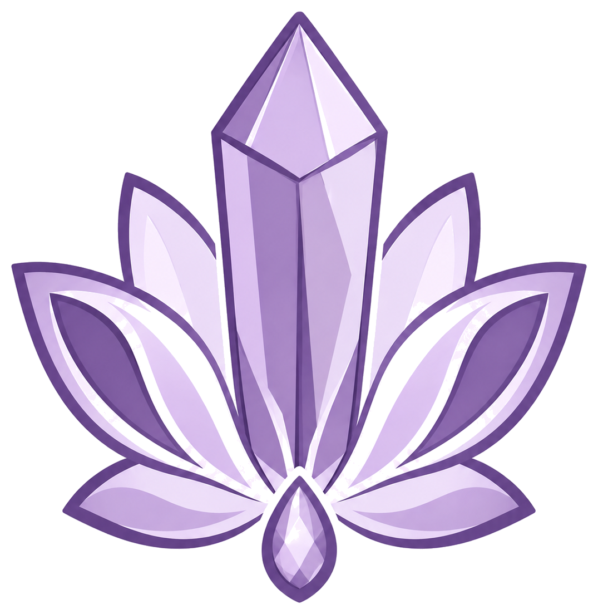
AURANOVAGEMSHealing Energy Get Free QuoteAura Nova Gems Learning Hub
Explore 30 popular crystals and their meanings in one searchable guide. Compare traditional symbolism, colors, common uses, chakras, zodiac associations and care notes, then choose a crystal that fits your intention.
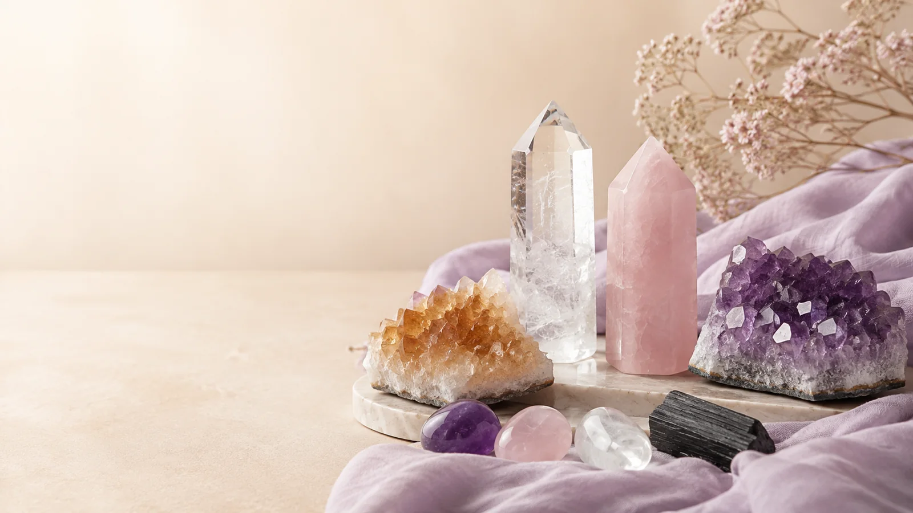
Understanding the tradition
Crystal meanings are traditional symbolic associations connected with a stone’s color, history and cultural use. For example, Amethyst is commonly associated with calm and reflection, Rose Quartz with love and compassion, Citrine with optimism and abundance, and Obsidian with grounding and truth. These meanings come from cultural history, folklore and personal spiritual practice—not from a single universal system.
Color is often one of the easiest starting points. Pink stones such as Rose Quartz are commonly associated with compassion and affection. Deep purple Amethyst is linked with reflection and intuition. Golden stones such as Citrine and Tiger's Eye are often connected with confidence, optimism and abundance, while dark stones such as Black Tourmaline and Obsidian are traditionally associated with grounding and protection.
These associations are not universal rules. A crystal can carry different meanings in different traditions, and a person's own memories or intentions may shape how a stone feels to them. Think of this guide as a clear reference for comparing commonly shared traditions, not as a fixed prescription.
Everyday practices
People often include crystals in reflective or meaningful routines. The purpose is usually symbolic: the stone can act as a visual reminder of a chosen intention.
Quick comparison
Compare 12 popular stones by traditional meaning, common intention, zodiac association and basic care before exploring the complete searchable library.
| Crystal | Traditional Meaning | Common Intention | Zodiac Association | Care Note |
|---|---|---|---|---|
| Clear Quartz | Clarity and amplification | Focus and intention setting | All signs | Use a soft cloth; avoid sudden temperature changes |
| Rose Quartz | Love and compassion | Relationships and self-care | Taurus, Libra | Limit prolonged direct sunlight |
| Amethyst | Calm and intuition | Meditation and evening rituals | Pisces, Aquarius | Limit prolonged direct sunlight |
| Citrine | Abundance and optimism | Confidence and success | Leo, Gemini | Wipe gently; store away from harder stones |
| Tiger's Eye | Courage and focus | Career and decision-making | Leo, Gemini | Use a soft cloth; avoid harsh chemicals |
| Moonstone | New beginnings | Reflection and personal growth | Cancer, Libra | Handle carefully; it can scratch or chip |
| Black Tourmaline | Protection and grounding | Creating a grounded space | Capricorn, Libra | Use a dry soft brush; avoid soaking |
| Labradorite | Transformation | Intuition and change | Leo, Scorpio | Avoid impact and prolonged soaking |
| Fluorite | Clarity and focus | Study and organization | Capricorn, Pisces | Keep dry and separate from harder stones |
| Green Aventurine | Opportunity and growth | Optimism and fresh starts | Aries, Leo | Wipe gently; avoid harsh chemicals |
| Obsidian | Grounding and truth | Boundaries and reflection | Scorpio, Sagittarius | Protect sharp edges from chips and impact |
| Smoky Quartz | Grounding and release | Steady focus during change | Capricorn, Scorpio | Use a soft cloth; avoid sudden temperature changes |
Visual crystal guide
Natural stones vary in tone and pattern. Use the images as a visual reference, then compare traditional associations in the library below.
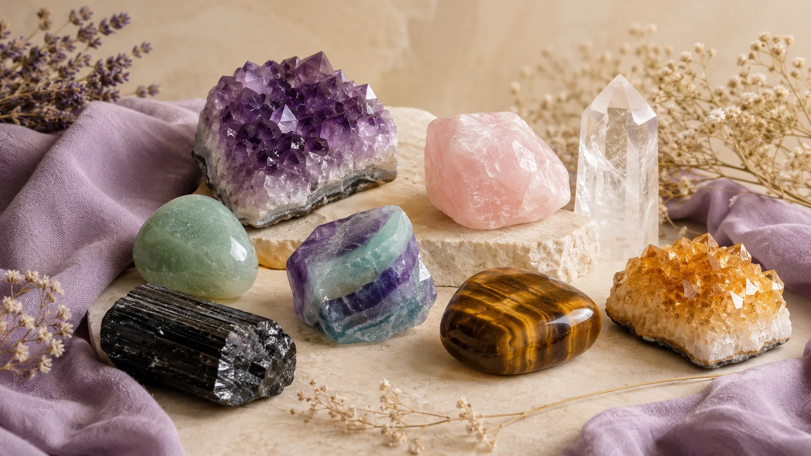
Search crystal meanings
30 crystals shown

Traditionally associated with calm, intuition, spiritual awareness, and reflective energy.
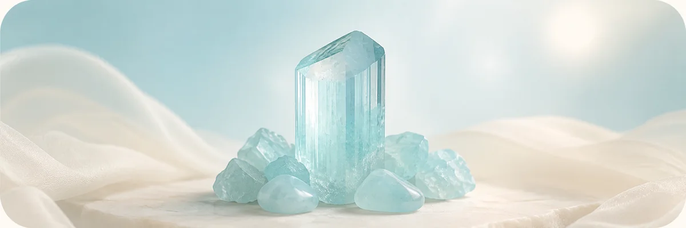
Soothing communication, courage, and flowing emotional balance.
Grounding protection, energetic boundaries, and stability.
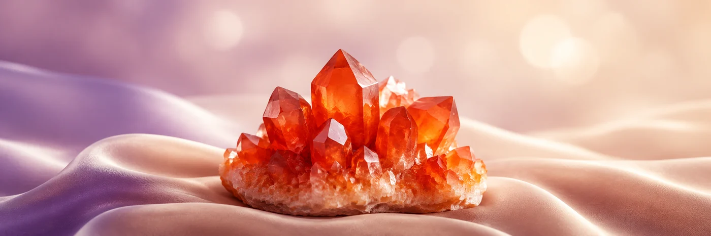
Clarity, amplification, cleansing, and setting focused intentions.
Traditionally associated with luck, growth, compassion, and gentle opportunity.
Grounding, strength, energetic protection, and practical focus.
Traditionally associated with patience, quiet reflection, and a peaceful atmosphere.
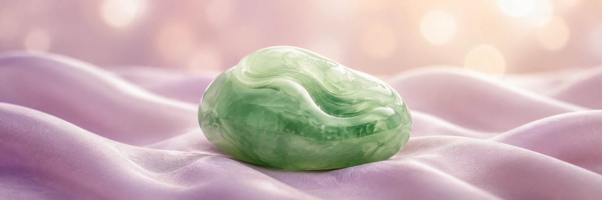
Transformation, intuition, aura protection, and mystical insight.
Traditionally associated with transformation, courage, compassion, and emotional growth.
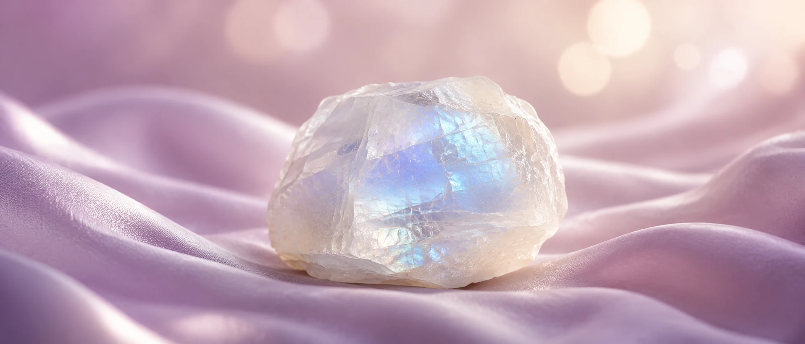
New beginnings, intuition, feminine energy, and emotional flow.
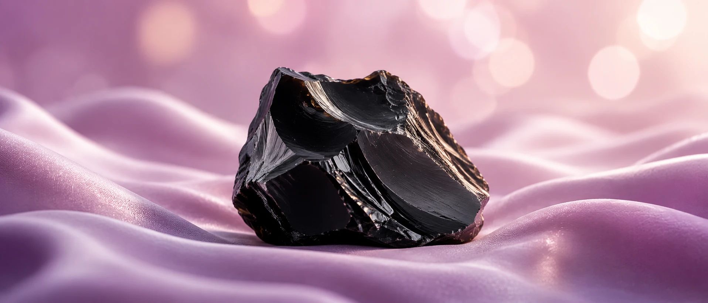
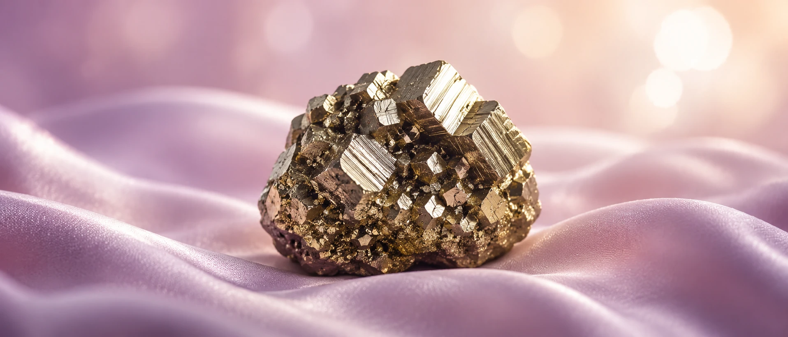
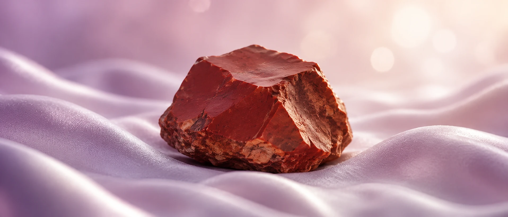
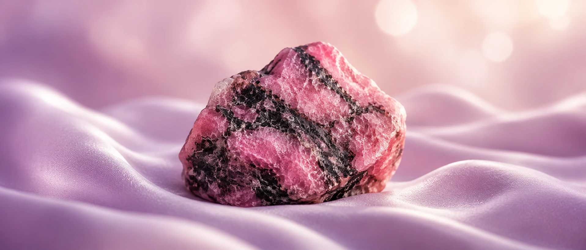
Traditionally associated with compassion, forgiveness, resilience, and heart-centered confidence.
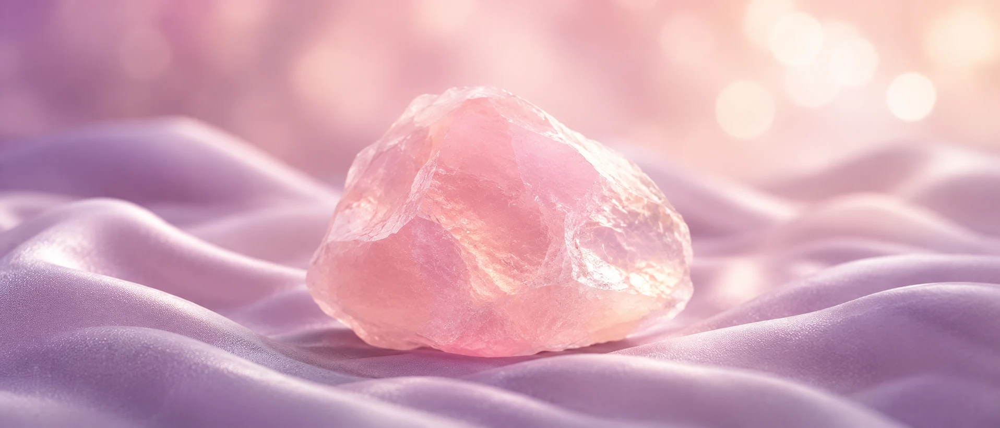
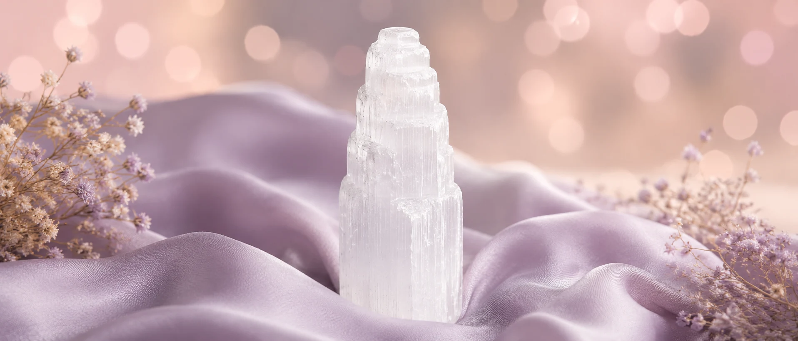
Purification, spiritual light, energetic cleansing, and clarity.
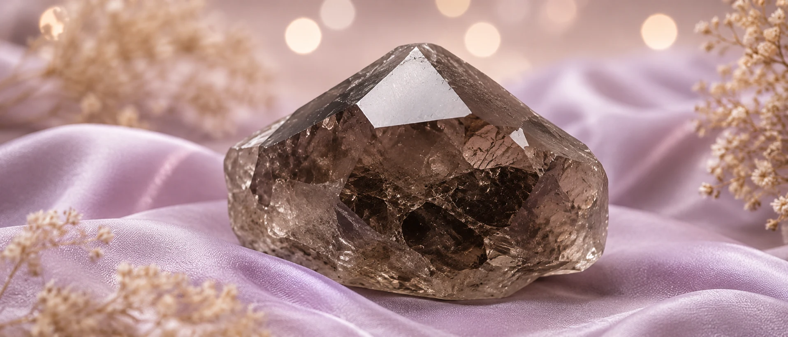
Traditionally associated with grounding, release, protection, and steady resilience.
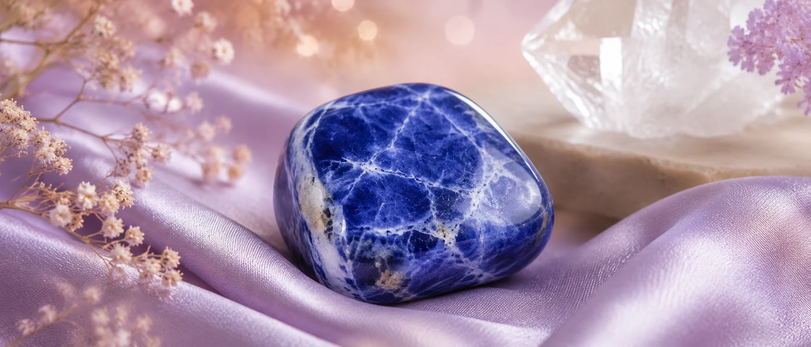
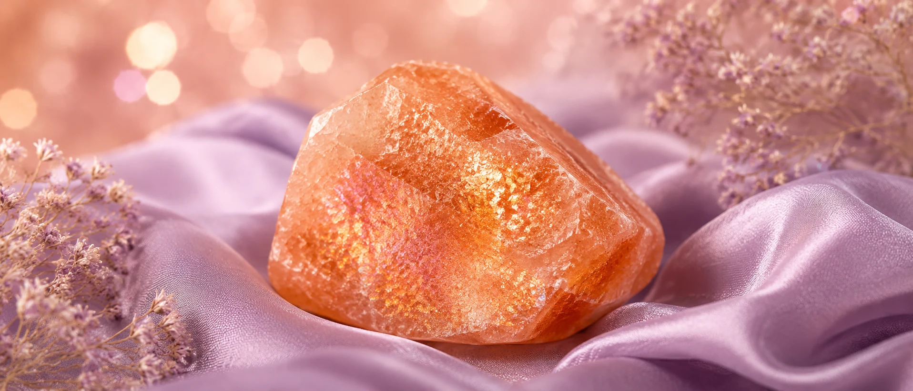
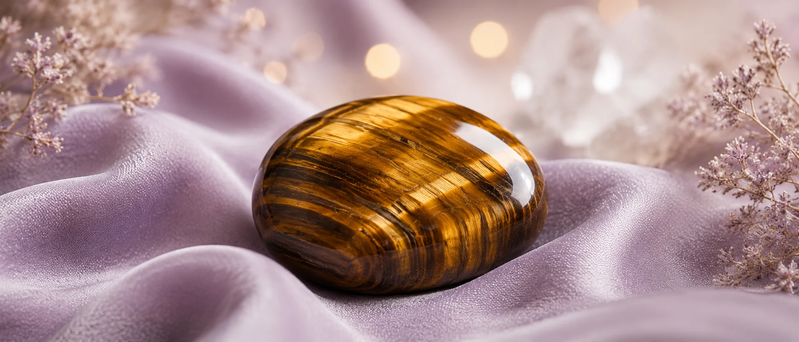
Courage, protection, confidence, and grounded decision-making.
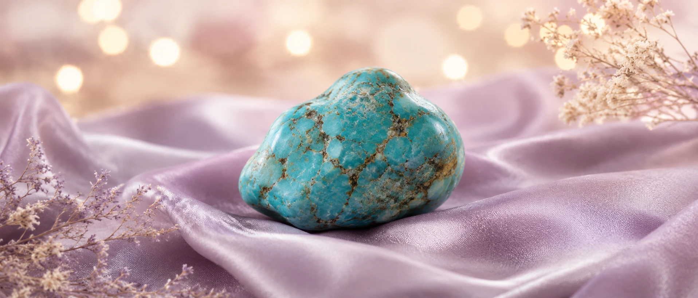
Communication, protection, travel luck, and peaceful expression.
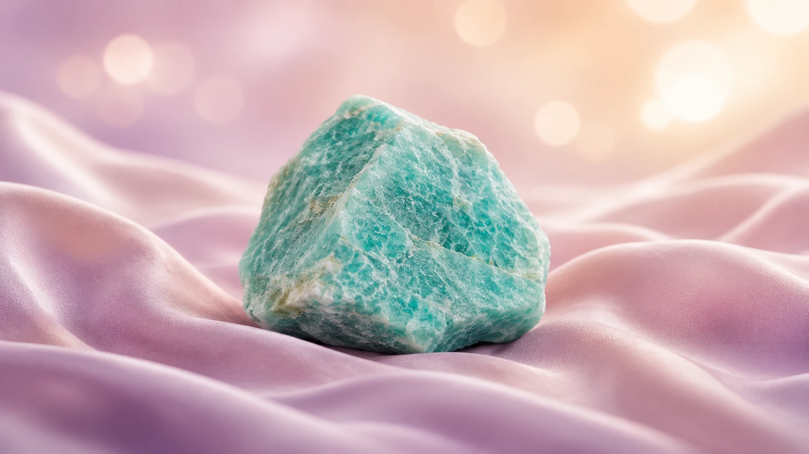
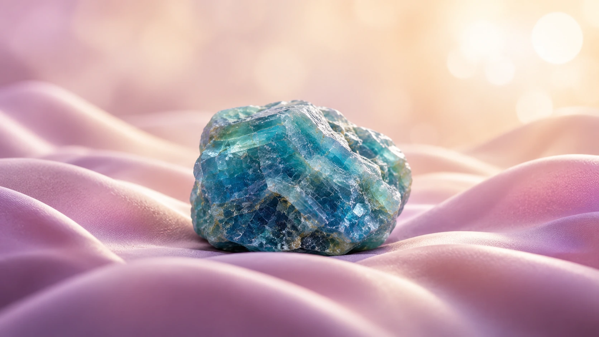
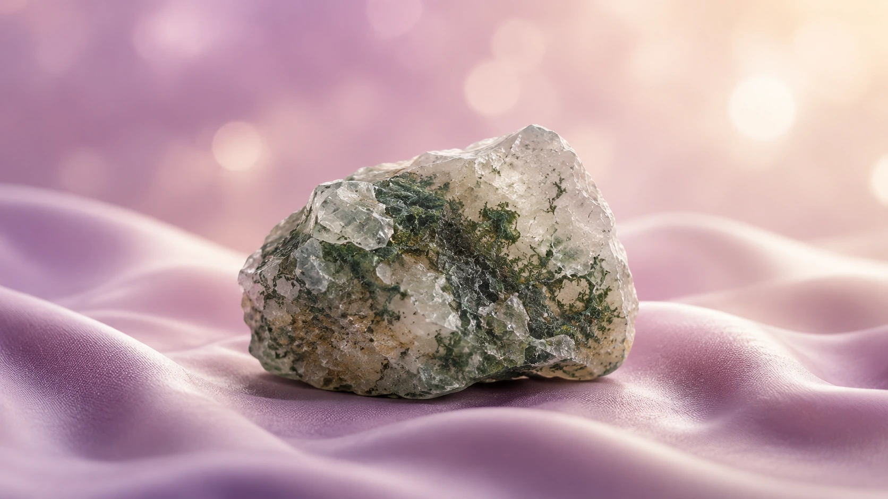
Try searching by a broader intention such as love, calm, protection, abundance or focus.
Popular crystal meanings
Traditionally associated with love, compassion and emotional softness. Rose Quartz is often chosen as a reminder to approach relationships—and yourself—with patience and care.
View Rose Quartz bracelet →Known for its purple color and long connection with reflection, calm and intuition. It is commonly included in meditation spaces and quiet evening routines.
View Amethyst bracelet →Its golden bands have made Tiger's Eye a traditional symbol of courage, discernment and grounded confidence—especially when facing decisions or change.
Find Tiger's Eye in the libraryWarm and bright, Citrine is commonly connected with optimism, creativity and abundance. Many people choose it as a symbol of confident forward movement.
View Citrine bracelet →Moonstone is traditionally associated with intuition, cycles and new beginnings. Its shifting sheen makes it a meaningful choice for periods of transition.
Find Moonstone in the libraryGlossy and substantial, Obsidian is traditionally associated with grounding, truth and personal boundaries. Its smooth surface also makes it a strong tactile focus.
View Black Obsidian bracelet →Beginner guide
Begin with the meaning you want to keep close, then consider color, size and how you plan to use the stone. There is no single correct choice; personal connection can matter as much as tradition.
Protect your collection
Care depends on a stone's mineral composition, hardness and finish. When unsure, use the gentlest dry method and ask a qualified gem specialist before using water, sunlight or cleaning products.
Use a clean, soft cloth or brush. Avoid harsh household chemicals.
Some minerals can dissolve, rust, fade or release unsafe compounds. Do not soak an unidentified stone.
Prolonged direct sun can fade stones including Amethyst and Rose Quartz.
If moonlight is part of your practice, keep the stone dry and protected outdoors.
Store pieces separately in soft pouches to reduce scratching and chipping.
Remove crystal jewelry before swimming, showering, exercise or applying cosmetics.
Shop by crystal meaning
Explore crystal jewelry by intention, or work with us to create a custom wholesale collection.
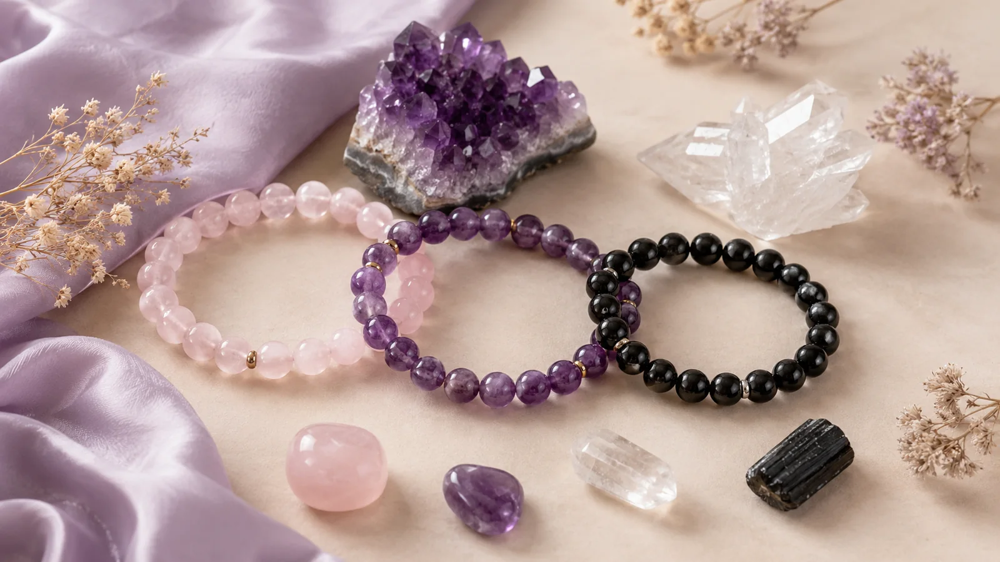
FAQ
Crystals are commonly given symbolic meanings based on cultural traditions, color, folklore and personal spiritual practices. Meanings can differ between traditions, so this guide presents widely shared associations rather than universal rules.
Popular examples include Rose Quartz for love and compassion, Amethyst for calm and reflection, Citrine for optimism and abundance, Tiger's Eye for courage and focus, and Black Tourmaline for grounding and symbolic protection. Meanings can vary between traditions.
Yes. A crystal can have different meanings across cultures and spiritual traditions. Color, local folklore, personal experience and the way a stone is used may all shape its symbolism, so the associations in this guide are common reference points rather than fixed rules.
Clear Quartz, Amethyst and Rose Quartz are popular starting points because their traditional associations are easy to understand. Choose the stone whose color or meaning feels most relevant to you.
Rose Quartz is the best-known stone associated with love and compassion. Rhodonite, Garnet and Green Aventurine are also traditionally connected with heart-centered intentions.
Black Tourmaline, Obsidian, Hematite and Smoky Quartz are commonly associated with grounding, boundaries and symbolic protection.
Yes. Many people combine stones based on color, personal style or complementary intentions. Start with two or three pieces so the combination remains comfortable and meaningful.
Start with an intention, compare traditional meanings and then consider practical details such as color, size, durability and whether you prefer jewelry or a display stone.
No. Crystal meanings come from cultural traditions, symbolism and personal spiritual practices. Crystals are not scientifically proven medical treatments.
There is no required schedule for symbolic cleansing. For physical care, gently dust or wipe a stone when needed and follow guidance appropriate to its mineral type.
Not all crystals are water-safe. Some can dissolve, rust, fade or release unsafe substances. Unless a stone has been correctly identified, use a dry cloth instead of soaking it.
Find your next stone
Explore natural crystal bracelets and compare the stones, bead sizes and available specifications.
Shop Crystal Bracelets